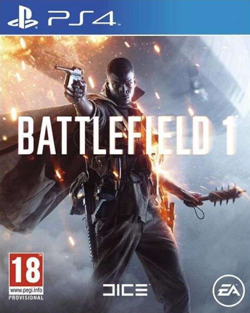
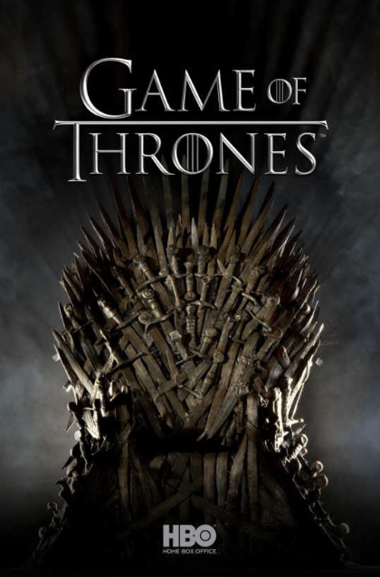
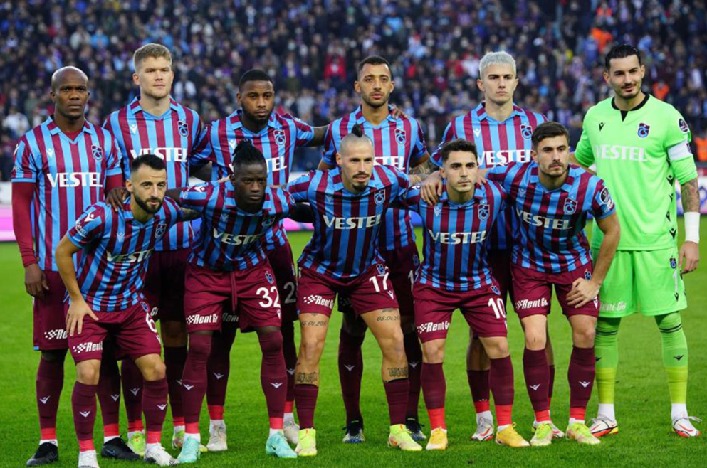

Ik ben altijd een liefhebber geweest van geschiedenis. Van jongs af aan, altijd als ik tijd had om op een computer op het internet te gaan, zou ik op Wikipedia een strijd of oorlog bekijken, bijvoorbeeld de Eerste Wereldoorlog. Ook was ik geïnteresseerd in het Ottomaanse Rijk, zoveel zelfs dat mijn broer een videogame voor mij had gekocht die als thema de Eerste Wereldoorlog heeft.


Ik werd een paar jaar geleden geïntroduceerd tot de serie Game of Thrones, en nu kan ik zeggen dat het mijn favoriete serie is. Ik heb het misschien al drie keer uitgekeken en wilde het weer kijken, maar toen zag ik dat de serie gebaseerd is op boeken. Dus heb ik de boeken gehaald, en nu lees ik die. Iets wat ik niet van mezelf had verwacht, maar ik vind het zo leuk dat ik bijna elke dag lees.
Ik ben geboren in Twente, maar mijn ouders komen uit Trabzon, de stad en provincie van de Turkse voetbalclub Trabzonspor. Iedereen uit Trabzon ondersteunt Trabzonspor, en de kleuren van de club zie je overal terug. Trabzonspor is het eerste team buiten de grote Istanbul-clubs dat kampioen is geworden in Turkije. Net als iedereen daar ben ik een grote fan van Trabzonspor, en ik kijk naar al hun wedstrijden.
